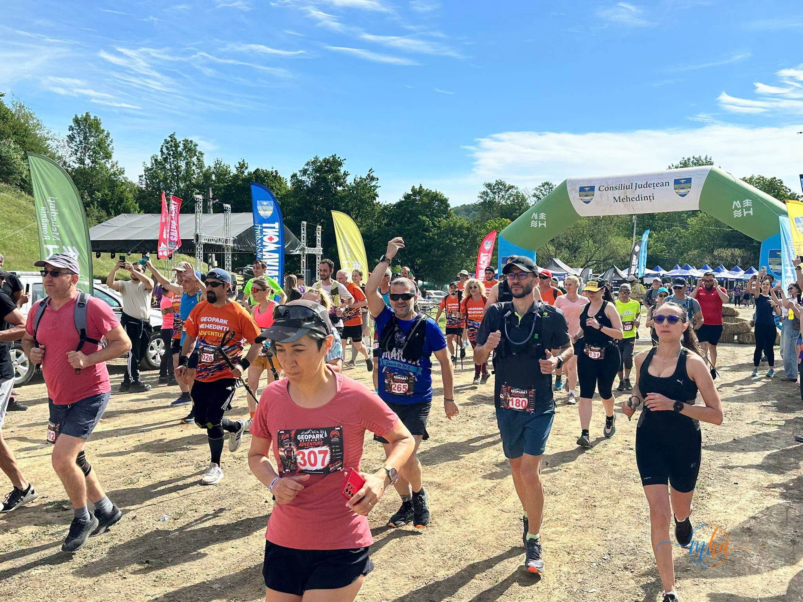
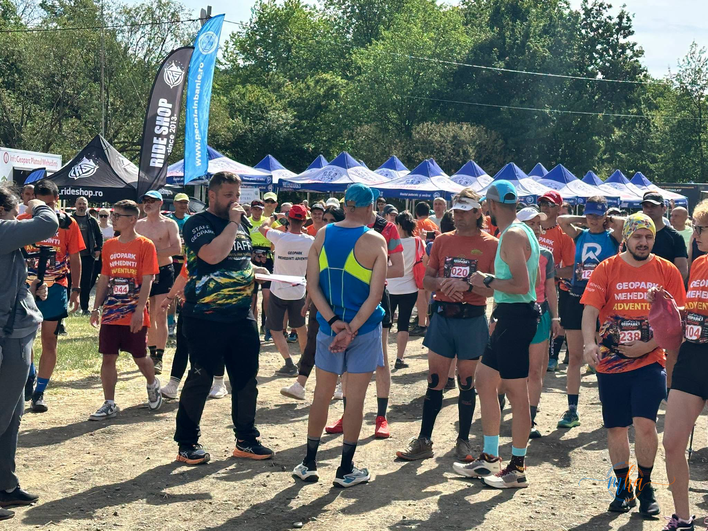
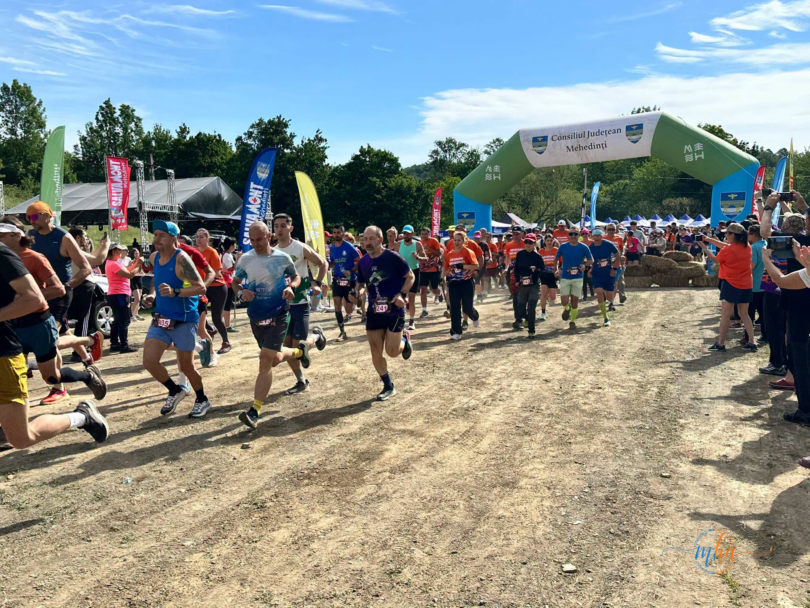
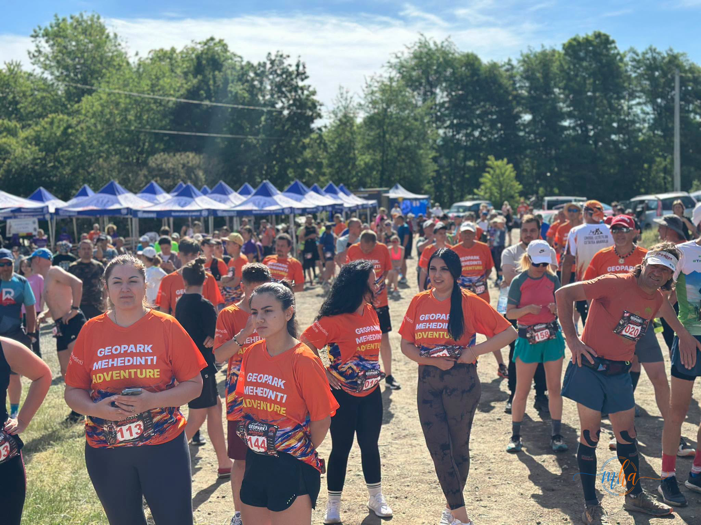

Baia de Aramă, 30–31 mai 2026. Sâmbătă dimineața, în tabăra de la Poligon din Brebina, s-a dat startul celei mai așteptate probe a celei de-a V-a ediții Geopark Mehedinți Adventure — cursele de alergare montană. Peste 300 de alergători din toată România s-au aliniat la start, unii cu ochii pe cronometre, alții cu zâmbetul pe buze și cu telefonul ridicat să surprindă peisajul. Reporterul MehedintiAzi.ro a fost acolo și a văzut cum arată cu adevărat spiritul unui eveniment care a crescut frumos, de la ediție la ediție.
Traseele alese de organizatori nu lasă loc de plictiseală. Geoparcul Platoul Mehedinți e un teren care te provoacă — urci, cobori, traversezi păduri, dai nas în nas cu peisaje pe care nu le găsești în nicio carte poștală. Ai 15 sau 30 de kilometri la dispoziție să înțelegi de ce locul ăsta merită tot respectul.
🏃 Pe traseu: picioarele obosesc, dar ochii nu se satură
Treizeci de kilometri printr-un geoparc nu sunt treizeci de kilometri obișnuiți. Fiecare curbă de nivel aduce un alt peisaj — calcar, pădure, pajiști înalte, dealuri verzi cât vezi cu ochii. Alergătorii care au ales cursa lungă au avut parte de o experiență completă a Platoul Mehedinți, în timp ce cei de pe cursa de 15 km s-au bucurat de cel mai bun rezumat al zonei.
La finish, indiferent de timp, toți aveau același lucru în comun: oboseala bună — aceea care se simte și a doua zi dimineața, dar care te face să zâmbești când te gândești la ea.

⛺ Tabăra de la Poligon-Brebina — sufletul evenimentului
Dacă traseele sunt inima competiției, tabăra de la Poligon, în Brebina, este sufletul ei. Trei zile, sute de oameni au trăit în corturi la poalele platoului, cu mâncare tradițională gătită în aer liber, limonadă naturală, muzică bună și un calendar de activități care nu lăsa loc de plictiseală.
Atmosfera de tabără — cu miros de mâncare, râsete și discuții aprinse între alergători despre traseu — e greu de descris în cuvinte. Trebuie trăită. Participanți și voluntari din toată România au coabitat timp de trei zile cu o naturalețe care îți amintește că oamenii, în fond, se înțeleg bine când pun deoparte agitația de zi cu zi.
🌟 Ce a oferit tabăra de la Poligon-Brebina:
- Cazare în corturi în mijlocul naturii, cu sprijinul Primăriei Baia de Aramă
- Mâncare tradițională preparată în tabără
- Limonadă naturală, muzică de calitate și multă voie bună
- Activități pentru participanți și voluntari pe tot parcursul celor 3 zile
- Comunitate autentică — sportivi, voluntari și localnici laolaltă


🎥 Vineri seara: „Rădăcini în calcar" — cinema sub cerul liber
„Rădăcini în calcar" — proiecție în aer liber, vineri seară
Filmul documentar realizat de Direcția de Administrare a Geoparcului Platoul Mehedinți a fost proiectat vineri seara, în aer liber, pentru participanți și spectatori. Filmul surprinde frumusețea naturii din Geoparc — flora, fauna și peisajele de calcar care fac din Platoul Mehedinți unul dintre cele mai spectaculoase colțuri ale României. Un moment care a dat ediției a V-a o dimensiune culturală în plus față de sport.
Imaginile din documentar, proiectate pe un ecran în mijlocul naturii, cu sunetul vântului în copaci și aerul rece al serii de mai — pentru cei care au fost acolo, e un moment greu de uitat. E genul de experiență pe care nu o găsești la niciun festival urban.


🏛️ Claudiu Cenușe și echipa Geoparcului — munca invizibilă care face posibil totul
În spatele fiecărui eveniment reușit există oameni care lucrează luni de zile fără să apară în poze. La Geopark Mehedinți Adventure 2026, acești oameni sunt echipa Direcției de Administrare a Geoparcului Platoul Mehedinți, coordonată de Claudiu Cenușe. De la trasarea și marcarea traseelor, la logistica taberei, la documentarul proiectat vineri seara — fiecare detaliu a purtat amprenta unei munci serioase și a unei pasiuni reale pentru locul pe care îl administrează.
„Geoparc Mehedinți Adventure nu este doar despre sport, este despre grija și respectul pentru natură, despre voluntariat și mai ales, prietenie."
Evenimentul a crescut de la an la an — și o spun numerele: de la primele ediții cu participare modestă, la 400+ sportivi în total la ediția a V-a. Nu e o coincidență. E rezultatul unei echipe care a înțeles că un eveniment de sport în natură trebuie construit pe autenticitate, nu pe spectacol ieftin.
🅳 Ionuț Tudorescu și Primăria Baia de Aramă — gazde de excepție
Fără sprijinul Primăriei Baia de Aramă și al primarului Ionuț Tudorescu, tabăra de la Poligon-Brebina nu ar fi arătat la fel. Infrastructura locală, logistica de cazare și accesul la zona de competiție au funcționat impecabil — un semn că administrația locală a înțeles ce înseamnă să ai un eveniment de acest calibru în comună.
Consiliul Județean Mehedinți, partenerul instituțional principal al evenimentului, a asigurat cadrul și resursele necesare pentru ca ediția a V-a să se ridice la nivelul așteptărilor.
Sursa: Consiliul Județean Mehedinți / Direcția Administrarea Geoparcului Platoul Mehedinți / Redacția MehedintiAzi.ro